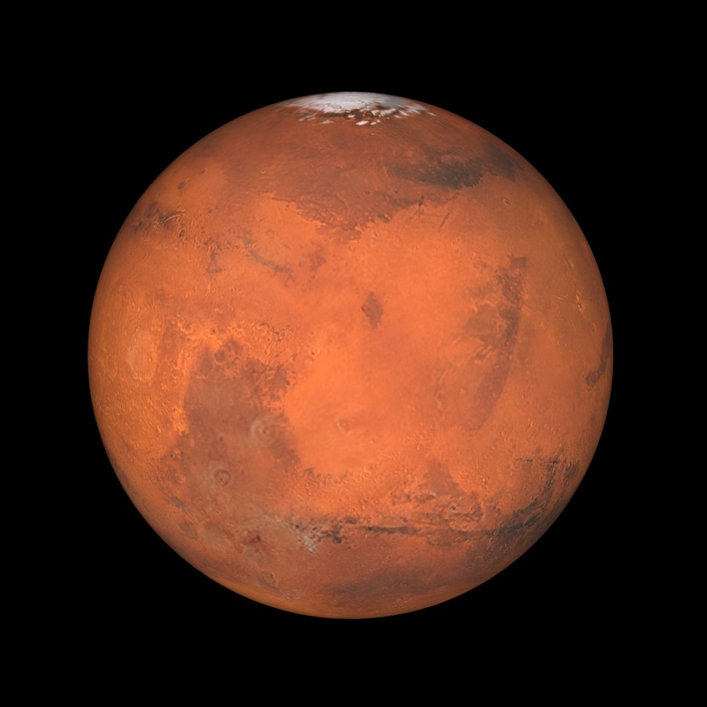

Marte

Marte (planeta)
Marte es un mundo frío y desértico. La temperatura media en Marte es de -65 grados Celsius (-85 grados Fahrenheit), muy por debajo del punto de congelación. Marte tiene la mitad del tamaño de la Tierra. A veces es llamado el planeta rojo. Es rojo debido al hierro oxidado de su suelo.
Al igual que la Tierra, Marte tiene estaciones del año, casquetes polares, volcanes, cañones y tiempo meteorológico. Tiene una atmósfera muy delgada compuesta principalmente de dióxido de carbono, nitrógeno y argón. Las personas no podrían respirar el aire en Marte.
Características
Luna
Fobos, Deimos
Distancia desde el sol
227.9 millones km
Radio
3,389.5 km
Superficie
144.4 millones km²
Gravedad
3.71 m/s²
Edad
4.603 miles de millones años
Período orbital
687 días